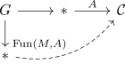

convolution algebra for a monoid
Definition
Let $\mathcal{C}$ be a symmetric monoidal category, $A \in \mathrm{Alg}_{\mathbb{E}_1}(\mathcal{C})$ an E_1 Algebra Let $M$ be a monoid then the convolution algebra $\mathrm{Fun}(M,A)$ is defined as the left kan extension

Here $G \rightarrow *, * \xrightarrow{A} \mathcal{C}$ are lax monoidal functors (cf. terminal functor).
see: